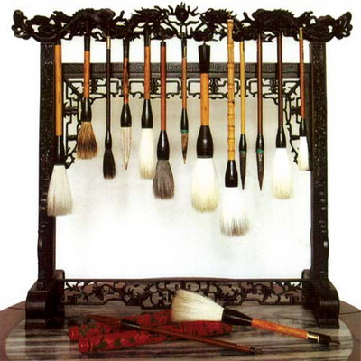
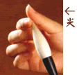
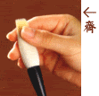
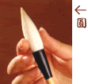
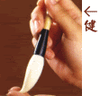
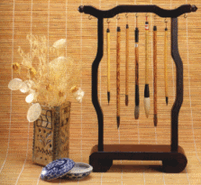

- Lịch sử ra đời của bút lông
Trong ngàn vạn loại bút, bút lông được coi là sản phẩm duy nhất của Trung Quốc . Bút lông truyền thống không những là một trong những văn phòng phẩm thiết yếu của người xưa mà còn chiếm vị trí hàng đầu trong việc biểu đạt ý tứ của hội họa và thư pháp . Tuy nhiên vì bút lông dễ bị hư hại , khó lưu giữ lâu nên những cây bút cổ còn lại rất hiếm . Lịch sử chế tạo bút lông đã xuất hiện từ lâu, khoảng thời kỳ Chiến Quốc , bút lông đã được sử dụng thịnh hành . Hội họa và Thư pháp Trung Quốc không thể tách rời khỏi việc sử dụng bút lông . Các loại bút lông cổ rất đa dạng , nếu lấy loại lông để phân ra thì có, lông thỏ, lông dê trắng, lông dê xanh, lông dê vàng, râu dê, lông ngựa, lông hươu, lông nai, lông mèo, lông chó, lông chuột, lông điêu, râu chuột, đuôi chuột, lông hổ, lông sói, lông cáo, lông vượn, lông ngỗng, lông vịt, lông gà, lông lợn, tóc người, râu người, cỏ mao ..... Nếu dựa vào tính năng để phân loại có: ngòi cứng, ngòi mềm , ngòi kiêm hai đặc tính. Nếu dựa vào quản bút mà phân biệt, có thủy trúc, kê mao trúc , ban trúc ,tống trúc , tử đàn mộc , kê dực mộc , đàn hương mộc , nam mộc , hoa lê mộc , huống hương mộc , sơn mài , lục trầm tất , nga voi , sừng tê , sừng trâu , sừng lân , ngọc , thủy tinh , lưu ly , vàng , bạc , sứ .... nhiều loại quản thuộc loại quý hiếm . Nếu phân theo mục đích sử dụng có sơn thủy bút, hoa hủy bút ,diệp cân,nhân vật bút , Y văn bút , thiết cốt bút , thái sắc bút ....
Cây bút sớm nhất xuất hiện cách đây khoảng hơn 2000 năm . Người ta vẫn thường coi tướng Tần, Mông Điềm làm ra bút nhưng tìm trong các miếng giáp cốt ở di tích Ân Khư (nhà Thương) đã lưu lại vết tích của mực và son , đều dùng bút viết ra . Do đó có thể thấy rằng bút ra đời trước đời Ân Thương mà Mông Điềm chỉ là người hoàn thiện bút lông mà thôi. Trước thời Tây Chu tuy không tìm thấy bút lông, nhưng trong các họa tiết gốm và giáp cốt văn đời Thương có thể chắc rằng người ta đã dùng bút lông . Trên các trúc giản và luạ đời Đông chu có thể thấy bút lông được dùng để viết chữ một cách rộng rãi . Người ta đã tìm thấy bút lông khi khai quật mộ Tằng Hầu ở Tùy Châu thuộc tỉnh Hồ bắc, đó là cây bút cổ nhất hiện nay . Sau đó người ta lại tìm được bút đời Chiến quốc ở di tích Tả Gia Công Sơn thuộc Trường Sa - tỉnh Hồ Nam, bút đời Tần ở vùng Thụy Hổ thuộc huyện Vân Mộng - tỉnh Hồ Nam, ở bãi Phóng Mã thuộc thành phố Thiên Thủy tỉnh Cam Túc, bút đời Hán ở gò Mã Vương - Trường Sa, Phượng Hoàng Sơn huyện Giang Lăng tỉnh Hồ Bắc, thành phố Vũ uy tỉnh Cam Túc, bút đời Tấn ở Vũ Uy...... đều là những tư liệu quý báu về bút cổ .
Chủng loại bút: Chủng loại của bút rất nhiều, đến nay thường dùng là các loại: Tử hào , Lang hào , Dương hào và Kiêm hào .

Bút Tử hào lấy lông trên sống lưng thỏ hoang để làm ra, lông có màu tím sẫm nên mới gọi là Tử hào . Độ cứng của lông thỏ ở phía Nam và phía Bắc không đồng đều nhau, người ta cũng pha lông thỏ Nam và Bắc để chế bút . Lông thỏ có đặc tính cứng nên bút lông thỏ cũng gọi là Kiện hào bút , thường lấy lông thỏ phía Bắc làm bút là chính , lông thường dài và nhọn , thích hợp viết chữ vuông vắn, ngay ngắn , các thư pháp gia thích dùng loại này . Bạch Cư Dị viết trong bài Nhạc phủ về Tử Hào bút: (Tử hào bút tiêm như chủy hề lợi như đao - Bút tử hào nhọn như găm chừ sắc như dao) đã nói đầy đủ đặc tính của loại bút này . Tuy nhiên bút dùng lông thỏ hoang nên giá rất cao, mặt khác lông thỏ không đủ dài để làm bút to viết đại tự hoành phi .
Bút Lang hào, bản thân tên gọi đã nói lên việc lấy lông sói chế thành . NGười xưa dùng lông sói để chế bút nhưng ngày nay cái gọi là Lao Hào thực là là lông chuột vàng . Sách vở ghi chép về bút Lang Hào khá muộn , có người suy đoán bút râu chuột là bút Lang Hào, thế thì loại bút này phải có trước Vương Hi Chi đời Tấn, tuy nhiên không có chứng cứ xác thực . Lông đuôi của chuột vàng nhọn có thể làm bút được, chất lông cứng sau lông thỏ và hơn lông dê , bút làm ra thuộc loại kiện hào bút ( bút lông cứng) . Khuyết điểm của bút này cũng giống như Tử Hào là không làm đựợc bút quá to .
Bút Dương hào tức là làm bút từ lông đuôi hoặc râu của dê xanh hoặc dê vàng . Tìm về nguồn gốc của loại bút này trước trước thời kỳ Nam Bắc triều, tới khi tướng Tần, Mông Điềm cải tiến ra bút lông kiểu mới, thì lông dê đã được sử dụng làm nguyên liệu . Thư pháp rất trọng bút lực nhưng lông dê thì mềm không có phong (ngòi nhọn), viết chữ sẽ bị Nhuyễn nhược vô cốt - yếu ớt vô lực), vì thế thư pháp gia các đời ít sử dụng loại này . Việc lấy lông dê làm bút chủ yếu thịnh hành từ sau Nam Tống nhưng được sử dụng phổ biến phải từ đầu nhà Thanh trở đi . Thư pháp Thanh chuộng hàm súc tròn trịa, không lộ liễu phô trương, nên chỉ có loại lông mềm như lông dê mới đáp ứng được nhu cầu đó . Độ mềm của lông dê cũng có nhiều mức khác nhau, nêú dùng loại giấy và mực phù hợp sẽ phát huy được phong cách uyển chuyển đầy đặn, hơn nữa giá của loại này rẻ, sợi lông lại dài có thể viết được chữ từ nửa mét trở lên .
Bút Kiêm hào là việc lấy 2 loại lông khác nhau tạo thành, vì nó là sự hỗn hợp nên mới có tên gọi như thế . Ví như Tam tử thất dương, Ngũ tử ngũ dương ..... Khi Mông Điềm cải tiến bút "Lấy lông hươu làm trụ, lấy lông dê bao quanh", đó chính là bút Kiêm Hào . Kiêm Hào thường phối hợp một cứng một mềm, lấy lông cứng làm chủ, đặt làm lõi bên trong, gọi là "trụ" ; lông mềm bao bên ngoài, làm phụ gọi là "bị" . Trụ là lông dài, bị là lông ngắn , thế gọi là "Bút có chính có phụ" (Hữu trụ hữu bị bút - . Do đó "bị" thường gồm nhiều tầng, thường lấy lông thỏ làm "trụ" (cốt), bên ngoài thêm một số "bị" bằng lông dê ngắn, sau đó lại thêm một lớp lông dê độ dài bằng "trụ", tổng cộng 3 lớp, vì thế phần bụng bút thường to, đầu bút lại nhỏ, giữ được nhiều mực, rất tiện cho việc viết chữ . Đặc tính bút tùy vào tỷ lệ của hỗn hợp lông, khi cứng, khi mềm, khi hội đủ cứng mềm, hơn nữa giá thành thấp, so với những loại khác thì có điểm vượt trội hơn .
Cách chọn bút:
Bút có bốn cái "đức" ( Tứ đức) (hiểu là đặc tính): đó là Tiêm, Tề, Viên, Kiện , dưới đây xin lần lượt giới thiệu:
Tiêm: khi lông bút chụm lại, ngòi bút phải nhọn . Bút có nhọn thì viết chữ mới dễ ra góc cạnh , biểu lộ được thần thái . Các tác giả thư pháp thường khiêm tốn mà xưng là "phốc bút" ( bút tù) nhưng loại bút tù không có ngòi nhọn khó biểu hiện được tinh thần của thư pháp . Khi mua bút mới, ngòi lông thường có keo nên tụ lại, rất dễ phân biệt . Khi kiểm tra bút cũ, trước hết nhúng ướt ngòi bút, ngòi bút sẽ tụ lại, có thể phân biệt bút tù hay nhọn .
Tề: khi bóp đầu bút bằng ra, các đầu lông trải đều ra. Bút được gọi là "tề" nếu đầu các sợi lông bằng nhau , không thò thụt , khi vận bút sẽ đạt được cảnh giới " Mọi sợi lông đều có lực " (- Vạn hào tề lực) . Tuy nhiên muốn kiểm tra điều này phải làm bút mất lớp keo đi, vì vậy khi mua không làm được .
Viên: Chỉ việc ngòi bút tròn đều, lông bút dầy dặn . Lông bút dầy tức là khi viết sẽ có lực , nếu không dáng chữ sẽ gầy guộc, thiếu sinh lực . Bút "viên" khi vận sẽ được như ý . Khi chọn mua bút, ngòi bút có keo, quan sát kỹ sẽ biết có tròn đều hay không .
Kiện: Là sự đàn hồi của ngòi bút; thử ấn ngòi bút rồi nhấc bút lên, ngòi trở về trạng thái cũ . Cây bút có sự đàn hồi, lúc vận bút sẽ được như ý, thông thường, lông thỏ, lông sói đàn hồi hơn lông dê, khi viết chữ sẽ có khí thế . Về vấn đề này, sau khi rửa sạch lớp keo, nhúng ẩm bút rồi ấn thử sẽ biết bút có "kiện" hay không .
Bảo quản bút:
Có được cây bút tốt thì việc bảo quản phải được đặt ra hàng đầu . Dùng bút mới, đầu tiên phải biết cách "khai bút" . Lấy cây bút mới đó nhúng vào nước ấm, ngâm một lúc, khi nào lông bút rời nhau ra là được, không nên ngâm lâu vì keo ở gốc bút sẽ bị hòa tan dẫn tới tình trạng "có bút mà không có ngòi lông" , ngòi sẽ dễ bị rụng ra . Bút Tử Hào khá cứng vì thế nên ngâm lâu hơn một chút .
Làm bút ẩm là việc cần thiết trước khi viết chữ, không nên nhúng ngay bút vào mực để viết . Đầu tiên dùng nước sạch ngâm ẩm ngòi bút, sau đó nhấc bút ra, không nên ngâm lâu vì sẽ làm tan keo ở gốc ngòi bútc . Sau đó treo ngược bút lên cho đến khi ngòi bút trở về trạng thái ban đầu, mất khoảng 10 phút . Phải treo bút ở nơi khô ráo, nếu dùng bút khô mà viết chữ ngay, lông bút sẽ kết dính lại với nhau, dễ đứt gấy, mất tính đàn hồi .
Làm xong những việc đó mới đem bút ra viết, việc "nhúng mực " (入墨 - nhập mặc) đòi hỏi học vấn cao . Muốn lấy mực vừa đủ để mực thấm đẫm ngòi bút, phải làm ngòi bút hết nước, có thể dùng giấy thấm nước cho khô đi . Gọi là "khô" không có nghĩa là khô cong mà nên để một lượng nước nhỏ đủ làm bút ẩm .
Sau khi viết phải lập tức rửa bút . Trong mực có keo, nếu không rửa bút ngay , ngòi bút sẽ bị kết dính với mực và keo, lần sau sử dụng sẽ khó hòa tan, làm bút chóng hỏng . Sau khi rưả sạch, trước hết phải làm sạch nước và mực còn sót lại rồi mới treo lên giá, để nước nhỏ hết, cho tới khi khô thì thôi . Nên treo nơi thoáng mát, chỉ có thể mới bảo đảm bút giữ được hình và các đặc tính, không được phơi nắng . Việc bảo quản bút cần hiểu được thế nào là sự khô ráo .